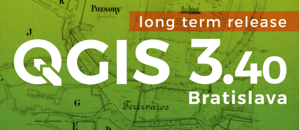
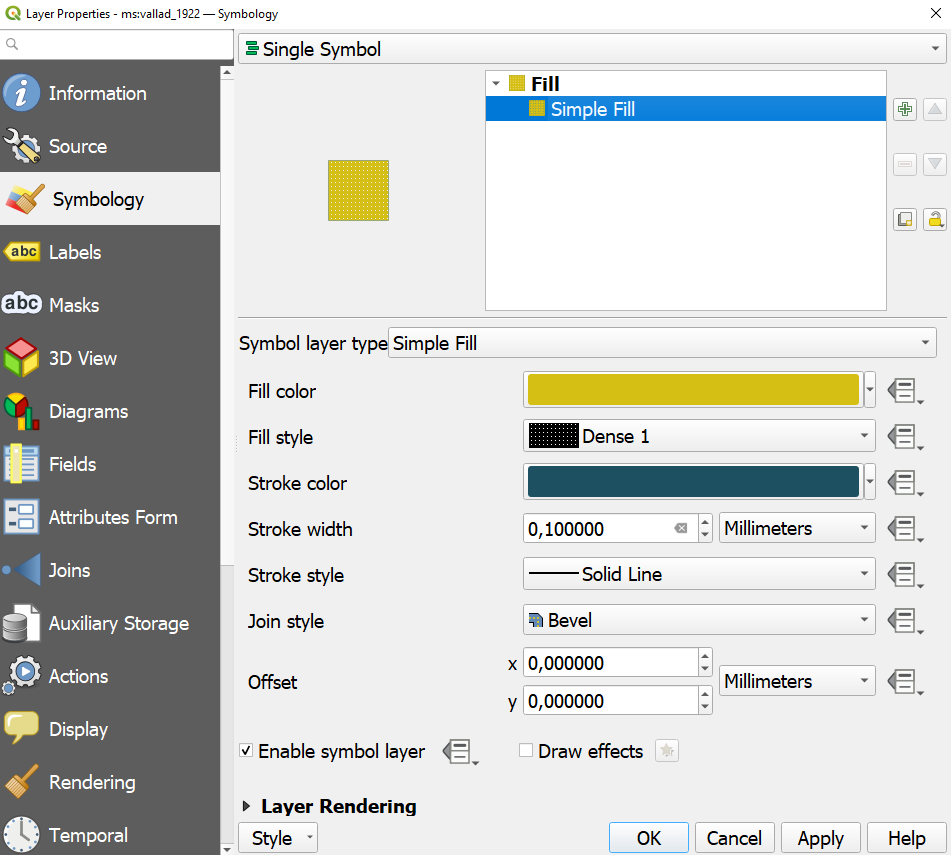
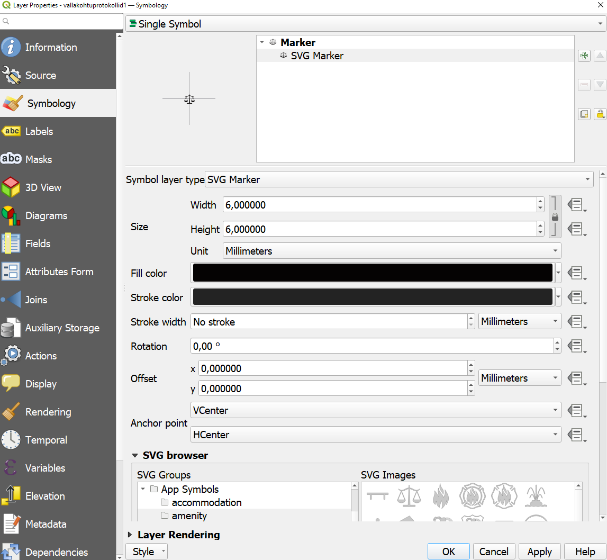
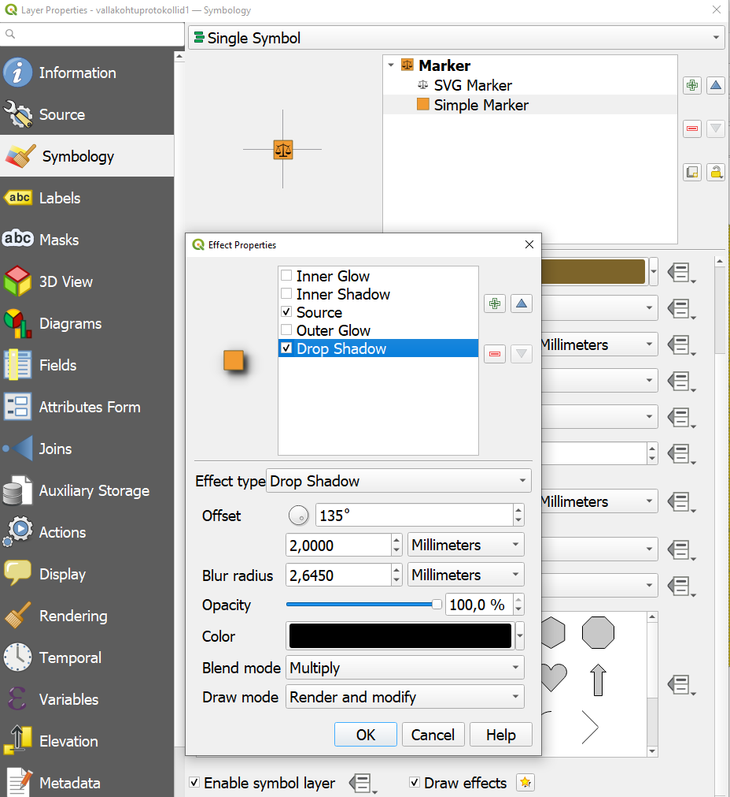
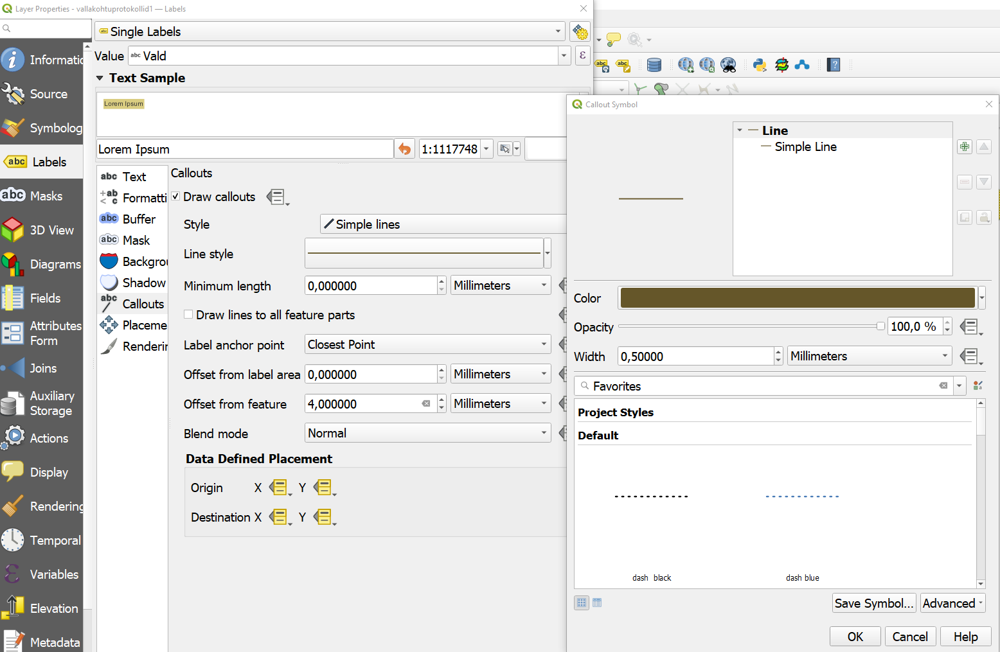

Praktikum 4 Sissejuhatus QGISi
QGIS (varasemalt Quantum GIS) on vabavaraline ja avatud lähtekoodiga geoinfosüsteemide tarkvara, mida saab kasutada kõikide tuntumate operatsioonisüsteemidega. QGISis saab rakendada kõiki põhilisi ruumiandmete analüüsi meetodeid ning funktsionaalsuselt ei jää see sugugi alla kommertstarkvarale (nt ArcGIS).
4.1 Installimine ja seadistamine
QGISil on alati kaks hetkeversiooni: stabiilne Long Term Release (LTR) ja uusimate võimaluste Latest Release (LR), lisaks on mõlemast vaheversioonid (Point Release), milles parandatakse ainult varasema versiooni vigu, aga ei muudeta midagi muud (nt ei lisata uusi tööriistu). Väga suuri erinevusi LTR ja LR vahel ei ole, eriti selle kursuse raames käsitletavate tööriistade osas. Arvutiklassi arvutitesse peaks olema installitud kõige hiljutisem stabiilne versioon 3.40 ‘Bratislava’. Kel huvi, võib vaadata lähemalt ka väljalaskegraafikut.
QGISi saab alla laadida programmi ametlikult kodulehelt, valides enda arvuti operatsioonisüsteemile sobiva variandi. Allalaadimine võib pisut aega võtta. Kui allalaadimine on lõppenud, avame faili ning installime programmi. Kasutame vaikimisi valikuid.
Avame programmi QGIS Desktop.

4.1.1 Kasutajaliidese keel
Sageli on QGIS esimesel korral avades eestikeelne. See on küll tore, aga kahjuks on tõlge kohati poolik ning internetist abi otsides on eestikeelsetest siltidest ja terminitest vähe kasu. Niisiis kasutame kursusel ingliskeelset versiooni. Selleks saab valida ülaserva menüüst Seaded → Suvandid → Üldine ning teha linnuke valiku Override System Locale ette. Vahetame ainult kasutajaliidese keele (User interface translation) ning vajutame allservas OK. Sulgeme QGISi ja avame uuesti. Nüüd ongi programm ingliskeelne.
Joonis 4.1: Kasutajaliidese keele seadistamine QGISis
4.1.2 Vaikimisi koordinaatide referentssüsteem
Kuna enamik harjutusi kursusel käsitlevad Eesti ruumiandmeid, oleks mõistlik valida vaikimisi koordinaatide referentssüsteemiks (CRS) Eesti süsteemi.
Valime menüü ülaservast Settings → Options → CRS and Transforms → CRS Handling → CRS for Projects → Use a default CRS. Klikime rippmenüü kõrval ikoonil ja otsime süsteemi Estonian Coordinate System of 1997 ehk L-EST97, mille EPSG kood on EPSG:3301. Valime sama referentssüsteemi ka CRS for Layers valiku juures.
Vahetame ära ka praeguse projekti CRSi. Selleks klikime ekraani alumises paremas nurgas maakera ikooni kõrval ning valime seal EPSG:3301 koodiga CRSi.
Joonis 4.2: Koordinaatide referentssüsteemi vahetamine QGISis
4.1.3 Paneelid ja tööriistad
Vaikimisi nähaolevaid paneele ja tööriistu saab muuta, valides vastavalt View → Panels ja View → Toolbars. Soovitatav on vaikmisi mitte näidata brauseri paneeli (Browser), kuna see võib QGISi muuta mingites operatsioonisüsteemides aeglaseks ning programmi hakata kokku jooksutama.
Loome enda arvutisse kursuse kausta (nt nimega geohum_2025) ning salvestame sinna QGISi (hetkel ilma sisuta) projekti: ülamenüüst Project → Save. Praktikumi jooksul võiks projekti aeg-ajalt salvestada!
Vaatame QGISi kasutajaliidest. Suurde keskel olevasse aknasse ilmuvad kaardid ja ruumiandmete kihid graafiliselt. Vasakul on kihtide aken Layers. Allservas näeme kursori asukoha koordinaate, mõõtkava, mida saab seal ka muuta, ning paremal nurgas on koordinaatide referentssüsteem, mis peaks nüüd olema EPSG:3301. Ülemises servas on menüüd ja kõiksugu tööriistad.
4.2 Aluskaardid
Nagu varasemates praktikumides nägime, on olemas rohkelt aluskaarte, mida erinevates rakendustes põhiliselt teemakaartide tegemisel kasutatakse. QGISis saab neid kasutada näiteks WMS-, WFS- või WCS-teenuste (vastavalt web map service, web feature service ja web coverage service) või pistikprogrammide (plugins) kaudu.
Eesti aluskaartide jaoks saab WMS-teenuse kaudu kasutada peaaegu kõiki Maa-ameti XGISi kaardirakenduses olevaid kihte. Täpsemalt saab lugeda Maa-ameti WMS-teenuste lehelt. Lisaks saab luua WMS-teenuse kaudu ühenduse kõiksugu muude ruumiandmete serveritega üle maailma (vt nt terrestris või otsi üles eri riikide ametlike geoportaalide teenused). Erinevalt WFS-teenusest (vektorandmete jaoks) ja WCS-teenusest (rasterandmete jaoks), saab WMS-teenuse kaarte kasutada sisuliselt ainult aluskaartide jaoks ja visualiseerimiseks. Päringuid, valikuid jm toiminguid nendega teha ei saa, kuna tegemist on lihtsalt piltidega.
- WMS-teenusest aluskaardi lisamiseks valime menüüst
Layer → Add Layer → Add WMS/WMTS layer.
- Lisame uue ühenduse (
New). Avanenud aknas määrame ühenduse nimeks (Name) näiteks Maa-ameti aluskaart ning URLi juurde kopeerime aadressi https://kaart.maaamet.ee/wms/alus?. VajutameOK. Nüüd on paika pandud, millise Maa-ameti kaardiserveriga QGIS ühenduse loob, aga ühendust ennast ei ole veel tekkinud.
- Klikime ühenduse loomiseks nupul
Connect. Valime serverist laetud kihtide hulgast näiteks138 MAANTEEDning klikime nupulAdd.
- Lisame veel ühe ühenduse (
New). Seal kirjutame nime lahtrisse Maa-ameti fotokaart ning URLi juurde kopeerime aadressi https://kaart.maaamet.ee/wms/fotokaart?. VajutameOK.
- Klikime uue ühenduse loomiseks nupul
Connect. Valime serverist kihi6 vreljeefning klikime nupulAdd. Sulgeme akna.
- Sikutame
Layerspaneelil teede kihi värvilise reljeefvarjutuse kihi peale, vastasel juhul ei ole teid näha.
Joonis 4.3: WMS-teenuse aluskaart QGISis
Kui teeme nüüd näiteks värvilise reljeefvarjutuse kihil paremkliki ja valime Properties, saame vaadata kihi omadusi. Ühtlasi näeme, et visuaalselt saame kihti teha ainult läbipaistva(ma)ks (jaotis Transparency), mustvalgeks, kontrastsemaks, heledamaks jms (jaotis Symbology), nii nagu ka tavalise pildifaili puhul.
Saame aluskaarte kasutada ka pistikprogrammide kaudu (nt QuickMapServices, aga vt ka teisi aluskaartide pistikprogramme).
- Valime ülaservas menüüst
Plugins → Manage and Install Plugins. Otsingusse kirjutameQuickmap, valime leitud pistikprogrammiQuickMapServicesning installime selle. Sulgeme akna.
- Järgmiseks valime ülamenüüst
Web → QuickMapServicesning sealt mõne teenusepakkuja aluskaardi. Esimest korda pistikprogrammi kasutades võiks laadida ka suuremat aluskaartide valikut pakkuva lisapaketiWeb → QuickMapServices → Settings → More services → Get contributed pack.
Võid nüüd vasakul paneelil kihte sisse ja välja lülitada või ära kustutada. Suumi ka veidi Eesti alalt välja ning vaata, milline näeb välja ülejäänud maailm Eesti projektsiooni kasutades.

Joonis 4.4: ESRI aluskaart QGISis
4.3 Andmete avamine
Nagu varasemast mäletame, on põhilised ruumiandmete tüübid raster- ja vektorandmed. Viimased neist võivad koosneda punktidest, joontest või polügoonidest. Vektorandmed võivad lisaks olla spetsiaalses ruumiandmete vormingus (nt GeoJSON, SHP, KML, GPKG) või ka tavalises lihttekstiformaadis (nt CSV).
4.3.1 Rasterandmed
Rasterandmete sisselugemiseks kasutame näitena Maa-ameti ortofotosid aastatest 1995 ja 2023. Valime ülamenüüst Layer → Add Layer → Add Raster Layer ning seejärel valime failid orto_1995.tif ja orto_2023.tif. Vajutame Add ja Close.
Esmapilgul ei ole midagi näha, kuna ortofotod on väga suure mõõtkavaga (= väga väikese ala kohta). Teeme ühel fotokihtidest paremkliki ning valime Zoom to Layer(s).
Joonis 4.5: Maa-ameti ortofotod QGISis
Vaatame fotode erinevusi. Selleks lülitame vastavaid kihte Layers paneelil sisse ja välja. Proovime suumida ka lähedale, et näha eraldiseisvaid piksleid. 1995. aasta ortofotol on oluliselt vähem piksleid, mis tähendab, et ühe piksli mõõtmed on palju suuremad. Rastri pikslisuuruse vaatamiseks teeme rasterkihil paremkliki ning valime Properties → Information → Information from provider → Pixel size. Piksli küljepikkus on siin esitatud meetrites.
Kustutame ortofotod nüüd QGISi kihtide hulgast ära (paremklikk kihil ja Remove Layer).
Ortofotode kohta saab rohkem lugeda ja neid ka ise kaardiruutude kaupa alla laadida Maa-ameti Geoportaalist.
4.3.2 Vektorandmed
Vektorandmete avamise näitlikustamiseks kasutame kohapärimuse kaardirakenduse (Eesti Kirjandusmuuseum, Maa-amet, Keskkonnaamet) andmeid. Rakendusest on päritud kõiki tekste, helisalvestisi ja videoid, milles mainitud koha tüüp oleks jõgi. Kohapärimuse vektorikihi ruumiobjekti tüüp on punkt, failivorming on GeoJSON.
Lisaks loeme sisse Maa-ameti vooluveekogude andmed, ent vaid nende jõgede kohta, mida on kohapärimuse kihil mainitud. Vooluveekogude vektorkihi ruumiobjekti tüüp on joon, failivorming on GPKG (geopackage).
Kõige taustaks loeme sisse ka Maa-ameti ajalooliste kihelkonnapiiride andmestiku (polügoonid). Failivorming on SHP (shapefile).
Vektorandmete sisselugemiseks valime ülamenüüst Layer → Add Layer → Add Vector Layer, valime Source jaotises kolme punktikesega nupul vajutades sobiva faili ja vajutame nupul Add. Kui GeoJSON- ja GPKG-vormingus faile saame lugeda sisse tervikuna, siis SHP-vormingus faili puhul peame sisse lugema ainult SHP-faili enda, ent hoolitsema selle eest, et kõik ülejäänud failid (cpg, dbf, prj, sbn jne) oleksid sellega samas kaustas olemas! Vastasel juhul SHP ei tööta. Seda peab silmas pidama ka siis, kui enda andmestikku SHP-vormingus kellegagi jagada tahate.
Joonis 4.6: Kohapärimuse, jõgede ja kihelkondade vektorkihid QGISis
Jällegi saab kihtide (Layers) paneelil kihtide järjekorda muuta, kui mõnd kihti näha ei ole (näiteks polügoonid katavad ära nii punktid kui ka jooned).
4.3.3 Andmete sisselugemine CSV-failist
Vektorkihi võime sisse lugeda ka tavalisest, väljadega tekstifailist (delimited text). Selleks valime Layer → Add Layer → Add Delimited Text Layer. Valime andmestike hulgast varasemast tuttava vallakohtuprotokollide csv-faili. Väljadega faili sisselugemiseks tuleb määrata, milline sümbol välju/tulpasid eraldab, millises kodeeringus fail on, kas failil on ka päiserida tulbanimedega jm. Kui tahame, et tabeli vaatlused kuvataks kuidagi ka kaardil, tuleb ette anda ka tulbanimed, mis sisaldavad koordinaate, ning koordinaatide referentssüsteemi. Vastasel juhul (No geometry) loetakse sisse lihtsalt atribuuttabel, ent tabeli andmeid ei saa kaardil ilma neid mingite ruumiandmetega ühendamata kuvada.
Vallakohtuprotokollide faili
- kodeering on UTF-8,
- väljasid eraldab semikoolon,
- esimene rida on päiserida,
- koordinaadid on tulbas nimega
LongitudejaLatitude, - koordinaadid on WGS-84 süsteemis (nn geograafilised koordinaadid), EPSG koodiga 4326.
Joonis 4.8: Vallakohtuprotokollide csv-faili sisselugemine
Vaatame nüüd ka vallakohtuprotokollide atribuuttabelit.
4.4 Andmete visualiseerimine
Vektorkihi visualiseerimiseks võime teha valitud kihil topeltkliki (või paremkliki ja valida Properties) ning liikuda jaotisse Symbology. Võime kujundamise paneeli ka püsivalt QGISi projekti põhiaknas kuvada, kui valime projektiakna ülamenüüst View → Panels → Layer Styling.
Vaikimisi on kõik kihi elemendid kujundatud samamoodi (Single Symbol). Punktobjektide põhiline kujunduselement on kasutatav sümbol (Marker), joonobjektidel joon (Line) ja polügoonidel polügooni täitevärv või -muster (Fill). Kiireks muutmiseks on kohe nähtaval näiteks värv (Color), läbipaistvus (Opacity), suurus (Size või Width) ja mõned vaikimisi pakutud sümbolitüübid või täitemustrid.
Kui tahame vektorkihi elementide väljanägemist põhjalikumalt muuta, saame klikkida vastava kujunduselemendi (Marker, Line, Fill) all asuval tekstil (Simple Marker, Simple Line, Simple Fill).
4.4.1 Harjutus 1
- Jätame kihelkondade polügoonidest alles ainult piirjooned (
Outline: Simple Line), mille värvime omakorda helehalliks.
- Teeme jõgede jooned siniseks (
Color) ja paksemaks (Width). Võime lisada sinistele joontele taustaks ka teise, veidi paksema ja heledama joone, mis toimiks visuaalse puhvrina (Add symbol layer).
- Teeme kohapärimuse punktid suuremaks (
Size) ja läbipaistvamaks (Opacity), teeme piirjoone (Stroke) heledamaks.
Joonis 4.9: Muudetud kujundusega vektorkihid
4.4.2 Sildid
Lisame jõgede kihile ka sildid tulbast nimetus. Selleks teeme jälle valitud kihil topeltkliki ja liigume nüüd jaotisse Labels. Vaikeväärtuse No Labels asemel valime Single Labels ning Value lahtrisse valime tulba/tunnuse nime.
Text → Sizejaotises teeme teksti pisut väiksemaks.
Formatting → Spacing → lettermäärame väärtuseks 1, et tähtede paigutust hõrendada.
- Lisame tekstile puhvri
Buffer → Draw text buffer.
Placementjaotisest valimeGeneral Settings → Mode → Curved, et paigutada sildid jõgede kõveruse järgi. Lubame neid paigutada nii joonest vasakule ja paremale kui ka joone peale.
Renderingjaotisest valimeOverlapping labels → Allow Overlaps without Penalty, et näidata kõiki silte.Label options → Allow inferior fallback placementslubab silte paigutada ka horisontaalselt, kui joon on muidu liiga lühike, et tekst sellele ära mahuks.
Callouts → Draw calloutslubame silte ka kaugemale paigutada, tõmmates sildi ja objekti vahele joone.
Tööriistaribal saab siltide tööriistadega silte ka ükshaaval paigutada, keerata jne.
Joonis 4.10: Siltide tööriistad
Joonis 4.11: Siltidega vektorkiht
4.4.3 Harjutus 2
Lisa WFS-teenuse (mitte WMS!!!) kaudu Maa-ameti ajalooliste haldusüksuste seast (https://teenus.maaamet.ee/ows/wms-ajalooline-haldus?) 1922. aasta vallapiiride kiht.
Vallapiiride kihile lisa vallakohtuprotokollide punktid.
Püüa kujundada kaart vallapiiride ja protokollidega nii nagu etteantud joonisel.
Valdade kihile tekstuuri lisamiseks saad Simple Fill kujunduselementide juures valida Fill style → Solid asemel midagi muud.
Protokollikihi markerite puhul kombineeri selleks variante Simple Marker (taustaruuduke) ja SVG Marker (kaalude ikoon). Taustaruudukesele saad varjusid lisada, kui valid markeri, kerid kujundusvalikute lõppu, teed linnukese valiku Draw effects ette ning valid tähekesest valiku Drop Shadow.
Joonis 4.12: Vallakohtuprotokollide kaart
Lahenduskäik (üks võimalikest):
- Lisame WFS-teenuse kaudu valdade aluskaardi:
Layer → Add Layer → Add WFS / OGC API - Features Layer. Loome uue ühenduse (New), ühenduse nimeks paneme näiteks Maa-ameti ajalooline haldus, URL-ribale kleebime aadressihttps://teenus.maaamet.ee/ows/wms-ajalooline-haldus?. VajutameOK. Loome kaardiserveriga ühenduse (Connect) ning valime pakutud kihtide hulgast kihiVald 1922 (ms:vallad_1922). VajutameAdd, avanenud hüpikaknas vajutameAdd Layersning sulgeme andmete sisselugemise akna.
- Kui QGISi sisseloetud kihtide hulgas pole veel vallakohtute punktikihti, avame ka selle (vt jaotist
Andmete sisselugemine CSV-failist).
- Teeme valdade polügoonikihil (
ms:vallad_1922) topeltkliki ning liigume jaotisseSymbology.Fill → Simple Fillall valimeFill colorväärtuseks kollase värvi HEX/HTML-koodiga#d6bf15,Fill styleväärtuseksDense 1, piirjoonte paksuseks 0,1 mm (Stroke width), piirjoonte värviks tumesinise värvi HEX/HTML-koodiga#1d5060(Stroke color).

- Teeme topeltkliki vallakohtuprotokollide punktikihil ja liigume samuti jaotisse
Symbology.Marker → Simple Markerall valimeSymbol layer typeväärtuseksSVG Marker, suuruseks (Size) 6 mm,SVG browseraknast valimeApp Symbols → amenityning valime kaalu ikooni.

- Nüüd lisame kaalu ikoonidele alla veel oranžid kastikesed, klikkides
Marker → SVG Markerkastikese kõrval rohelisel plussmärgil (Add symbol layer). Tekkinud punktisümboli (Simple Marker) liigutame SVG markeri alla, kasutades sinist noolt kastikese kõrval (Move down).Simple Markersümboli suuruseks määrame 6,4 mm (Size), värviks (Fill color) oranži HEX/HTML-koodiga#f29b31, piirjoone värviks (Stroke color) pruuni värvi, nt HEX/HTML-koodiga#7d642a. Oranžile kastikesele lisame ka varju. Selleks kerimeSimple Markerkujundusvalikute all lõppu välja, teeme linnukese valikuDraw effectsette ning klikime kollasel tähekesel. Lisaks valikuleSourceteeme linnukese ka valikuDrop Shadowette.

- Lõpuks lisame valdadele valla nimedega sildid. Selleks teeme vallakohtuprotokollide punktikihil topeltkliki ja liigume jaotisse
Labels.No Labelsasemel valimeSingle LabelsningValueväärtuseks tulbaVald. Teksti suuruseks (Text → Size) määrame 8 punkti, joonistame siltidele kollase tausta (Background → Draw background) HEX/HTML-värvikoodiga#dacd81, taustapuhvri suuruseks määrame igast küljest 1 punkti (Size XjaSize Y), paigutame sildid sümbolite kohale (Placement → General Settings → Mode → Offset from Point,Quadrantüleval keskel,Offset Y: -3,5), lubame siltidel ka kattuda (Rendering → Overlapping labels → Mode → Allow Overlaps without Penalty), kattuvate siltide paremaks paigutamiseks lubame ka viiktekste (Callouts → Draw callouts), viiktekstide jooned teeme pruunikaks (HEX/HTML-kood#655629) ja paksemaks (0,5 mm), joone alguspunkti liigutame sümbolist kaugemale (Offset from featureväärtuseks nt 4 mm). Lõpuks kasutame siltide käsitsi liigutamise tööriista (kollane siltabc, mille all on sinisel taustal valge nool), et liigutada sildid sobivasse kohta.

4.5 Kaartide eksportimine
Kui kaardiaknas on kaart valmis, siis võib selle salvestada pildina.
Selleks:
- valime ülamenüüst
Project → New Print Layoutja anname oma kaardile sobiva nime;
- avanenud aknas valime ülalt
Add Item → Add Map. Joonistame akna valgele lehele nelinurga, hoides all hiire vasakpoolset klahvi. QGISi peaaknas olev kaart kuvatakse sinna. Abiks kaardi paigutamisel on taustaruudustik (View → Show Grid) ja selle külge haakimine (View → Snap to grid).
- Sätime kaarti nii, et kõik vajalik oleks näha. Selleks valime
Edit → Move Contentvõi vajutame klaviatuuril klahviC. Kui oleme kaardi õigesse kohta liigutanud, valime menüüstEdit → Select/Move Itemvõi vajutame klaviatuuril klahviV.
- Muudame kaardi taustavärvi tumesiniseks. Selleks valime parempoolsel paneelil
Item Propertiesning kerime alla sektsiooniniBackground. Vahetame värvi.
- Lisame kaardile joonmõõtkava:
Add Item → Add Scale Bar. Parempoolsel paneelil saab muuta mõõtkava pikkust ja stiili (Item Properties → Segments). Lisame paremale poole nii palju ühikuid, kui soovime.Fixed widthmuudab mõõtkava ühe ühiku pikkust.
- Lisame kaardile ka pealkirja ja viite Maa-ametile:
Add Item → Add Label.
- Salvestame kaardivaate ning ekspordime seejärel kaardi:
Layout → Export As Image.
Joonis 4.13: Valmis kaart